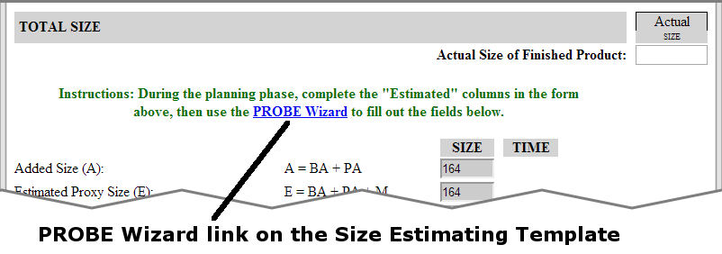
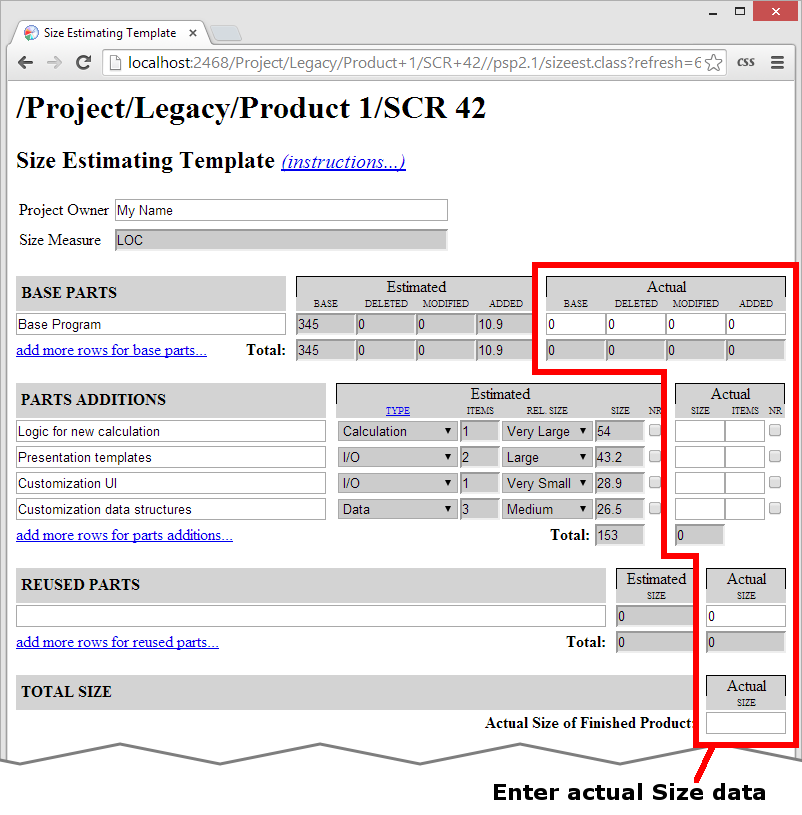
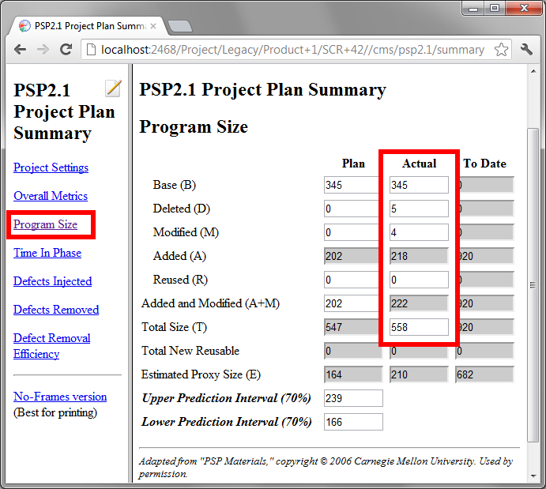

Using the Size Estimating Template Using the Size Estimating Template
Using the Size Estimating Template Using the Size Estimating TemplateThe Size Estimating Template is used to help make estimates of how big a new project will be or how long it will take to create the project (size and time estimation). It is patterned after the Size Estimating Template from Watts Humphrey's book A Self-Improvement Process for Software Engineers.

(Note: Watts Humphrey released an earlier book called A Discipline for Software Engineering which used a very different layout for this form. If you are using the old version of the PSP scripts, you will see the old form layout. The paragraphs below describe the new version of the form.)
Right near the top of the form is a link to bring up the Size Estimating Template instructions form. The dashboard will bring up the instructions in a separate web browser so that the two can be placed side by side on your screen.
Also, there are several links on the form that will add rows to the form. If you need more room than the form provides, just click on the appropriate link and it will expand for you.
The header section contains a field for your name. If the field is empty, go ahead and enter your name; it will show up on the other forms as well.
The Size Estimating Template can be used to estimate many different types of work. If you are using a PSP task, the dashboard will assume that you are producing software source code, and will automatically enter "LOC" in the "Size Measure" field. If you are using a defined team workflow, the size measure from that process will be entered into this field instead. If you are using a generic project, you must enter the appropriate size metric in this field.
The Base Parts section is where you enter the information about any preexisting components that may need modifications during the course of your project. If you have several of these components, you can use a separate line for each.
The form has blanks for both Estimated and Actual sets of data. During the planning phase of the project, you should enter data in the Estimated columns. After the project is finished and you are in the postmortem phase, you can enter data in the Actual columns.
The form asks for the base size and the size of deleted, added, and modified elements. In the BASE column, enter the size of the preexisting component. (For example if you are creating a modification to an already existing computer program, the LOC from the existing program count as base LOC.)
In the next three columns, you estimate the size of deleted, modified, and added elements. (Continuing the software example, you would enter the number of existing LOC you think you might delete, the number of existing LOC you think you might modify, and some number of new LOC you think you might add.) A histogram appears to show you how these numbers relate to the size of the preexisting, base component. You can drag sliders to estimate an approximate percentage.
Parts Additions is the section where you will record the bulk of new development in most of your projects. This section allows you to estimate the new components you believe you will create during the course of this project. You can choose the level of granularity that makes the most sense for your estimating needs. For software development, these could be new objects, new files, new functions, new subroutines, new methods, etc. For document creation, these could be new documents, new document sections, new paragraphs, etc. Each object should be something you can visualize during the planning process, and whose size can be estimated using the Size Metric displayed in the field at the top of the form.
Blanks are provided to enter the description of each added part, the type of part that is being added, the number of items that are going to be added of this type, the relative size of these items, and the numeric estimate/measure of the size of each added part.
The type of each part is selected from a table of standard object categories. When you first begin using this form, you may not have such a table. If you or your team members create one or more tables, you can enter them by clicking on the hyperlink at the top of the column. (If you are estimating software development in LOC, you will have the benefit of a default set of categories: namely Calculation, Data, I/O, Logic, Setup or Text. New PSP users should usually stick to the preset types; as you gain experience, you may use your PSP training to define your own proxy categories.) Select the category that best fits the type of each added part.
The number of items can be useful when you are estimating a high-level object. For example, if you are estimating the size of an object or class in an object-oriented language, you could use this field to record the number of methods that will be present in an object you plan to create. If you are using some custom proxy type category, this field could capture the count of proxy elements you plan to produce. If these scenarios don't apply, you can leave this field blank or enter the number "1".
The relative size pull down allows you to choose from subjective size categories such as Very Small, Small, Medium, Large, and Very Large. To produce the most accurate estimates, you should aim for a level of planning granularity that allows most of your planned parts to be of Medium size, with a balance of smaller and larger parts.
After you enter values in the previous three columns, the data from the proxy category table will be used to produce an estimated size. If the generated number seems too big or too small, choose a different relative size. If you did not have a table of object categories to use, you should make your best estimate of the size and enter it into this field.
If you are writing software, consider whether each new part is sufficiently general purpose that it can be checked into a reuse library. Generally this means more than just code that can probably be reused in the general sense. It usually has to do with proper packaging of the code as well: Are proper interfaces defined? Is the code sufficiently well documented? Etc. If you intend to design the code for reuse, put a check mark in the NR (New Reusable) column.
Reused parts are typically only used during software development; they are objects that are brought into the program from a reuse library and used verbatim. New PSP users can sometimes be confused by the difference between a reused part and a base part. The main rule is that you must not count the same component as both base and reused - otherwise the size accounting formulas will not work out correctly. In addition, the form will not let you enter added/deleted/modified size for reused parts, so you should only put items in the reused parts section if they can be reused with no changes.
Once you have thought through all the changes that are going to be made to the software, you are ready to calculate a prediction of size and or time. The form will add up numbers from the sections above to produce an Estimated Proxy Size, which the PROBE method will use as your base estimate.

The Size Estimation Template offers a link that will allow you to choose the PROBE Wizard to help you make your estimates. If you use the PROBE Wizard, it will read your Estimated Proxy Size off the size estimating template automatically, and will save your chosen estimates back to the size estimating template automatically. For more information about using the PROBE Wizard, see the Using the PROBE Wizard help topic.
On the other hand, if you use the PROBE tool, you will need to type the Estimated Proxy Size into the Estimate field on the tool. Once you have investigated the relationships among your process data, you should manually copy your final estimates back to the size estimating template, along with the various other measures that come about as a result of the estimation (B0, B1, UPI, LPI, prediction range, r2, probe method selected). If you use PROBE method C or D, the Prediction Range field and the other numeric fields below it can be left blank. For more information about the PROBE tool provided by the dashboard, see the Using the PROBE tool help topic.
Once you reach the Postmortem phase and you have the Actual size data, you should return to this form to enter the actuals for the various measures on the form (base, deleted, modified, and added size, counts for the various objects, etc.).

Some people do not care to enter detailed actual size data on the Size Estimating Template. Those numbers shown above can safely be skipped as long as you faithfully enter summarized actual size data on the Project Plan Summary:
